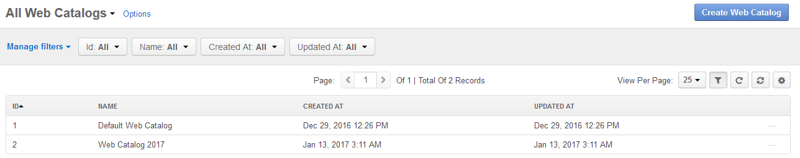
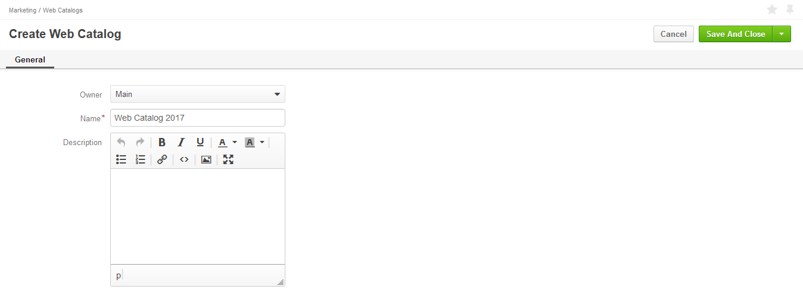
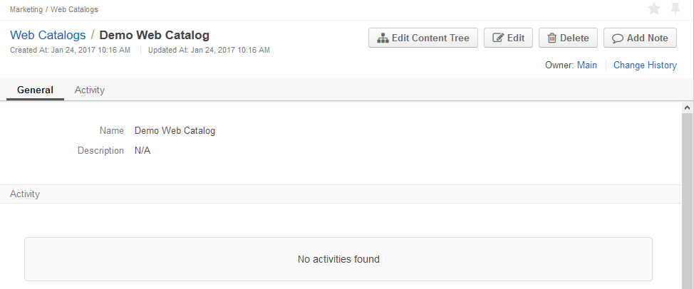
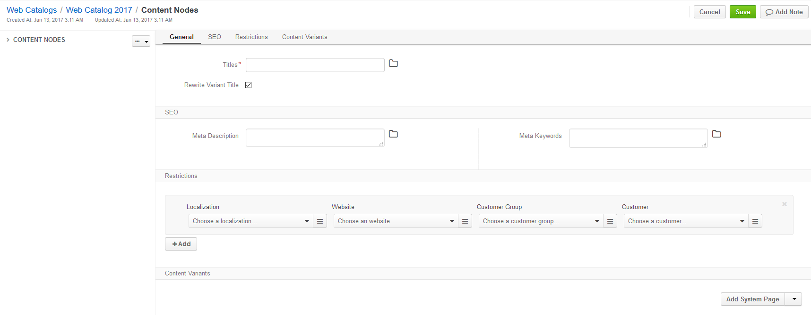
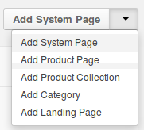
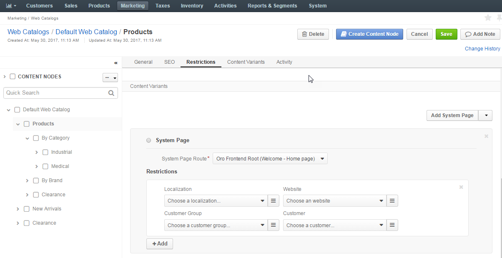
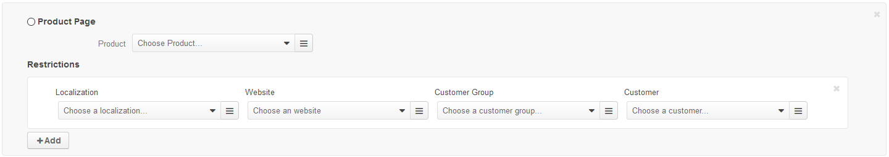
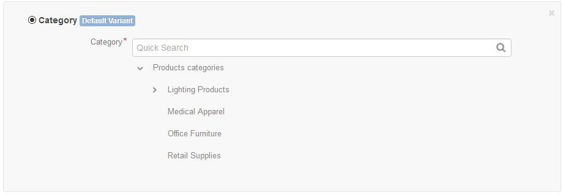
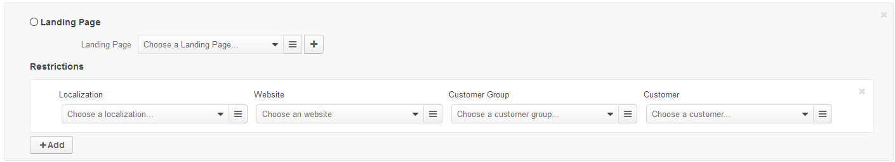
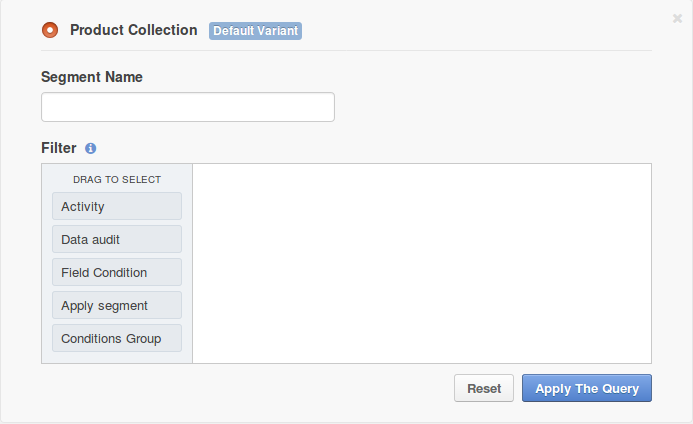

Web Catalogs¶
This topic contains the following sections:
Overview¶
Web catalog is a content management tool that helps build highly personalized custom versions of your websites by mixing in category pages, product pages, landing pages and pre-existing system pages in different variations based on the customer account information, their customer group or language preference.
With OroCommerce web catalog and content tree, you can organize the target web site structure to gain improved purchasing experience and use a set of in-place SEO tools to make it reachable for your target audience.
The Web Catalog content nodes may be of the following types:
- System page - one of the standard eCommerce website pages (e.g. sign in, user profile, open orders, etc).
- Product - direct link to product details.
- Product Collection - a dynamically generated group of products that are stored as data segment.
- Category - a category of the master catalog.
- Landing page - a custom landing page created in the Marketing > Landing Pages section.
To view all Web Catalogs, navigate to Marketing > Web Catalogs in the main menu.
Configuration¶
You can control the frequency of the product collections indexation. By default, product collections are indexed every hour.
Note
Indexing simple filters that rely only on the product attributes happens via the message queue. Indexing task is queued immediately after the product collection node is saved. After the index task is processed, the product collection (or the part of product collection) is available on the Front Store immediately.
Indexing more complex filters (e.g. those that involve relationships with other entities) is separated from the common reindexation process and happens on a dedicated schedule via cron.
To change the default product collections indexation frequency:
Navigate to the system configuration (click System > Configuration in the main menu).
Select Commerce > Product > Product Collections in the menu to the left.
To customize the Indexation Cron Schedule:
- Clear the Use Default box next to the option.
- Select the desired frequency from the list.
Click Save.
Create a Web Catalog¶
To create a new Web Catalog:
Navigate to Marketing > Web Catalogs in the main menu.
Click Create Web Catalog.
The following page opens:
Fill in Name and Description for the Web Catalog you are creating.
Click Save on the top right of the page.
The new Web Catalog is created.
Now you are ready to organize catalog content into the desired structure that will define the navigation and menu look and feel on the OroCommerce store frontend:
Click the Edit Content Tree on the top right of the page.
Create the root node of the web catalog as described in the Set Up a Root Content Node section. It is recommended to use Oro Frontend Root system page as a root node of your web catalog.
Click Save on the top right of the page.
Once the web catalog root node is saved, create the nested nodes on the second level that will be shown as main menu items on the OroCommerce Store Front:
Ensure that the root node is selected in the content nodes structure to the left.
Click Create Content Node on the top right of the page.
The following page opens:
Set up the node as described in the Set Up a Content Node for Menu or Sub-Menu Item section.
Click Save on the top right of the page.
Set up as many sub-menu nodes as you need.
To enable sub-menu and populate it with links to the content variants:
- Select a second level node in the Content Nodes tree to the left.
- Click Create Content Node on the top right of the page and follow the process described in the Set Up a Content Node for Menu or Sub-Menu Item section.
Set up as many sub-menu nodes as you need.
Set Up a Root Content Node¶
To map an entry point for the web catalog content tree:
In the General section, fill in root content node title that serves as a container for the nodes added later in the Content Variants section.
If necessary, translate the title into the languages supported in your OroCommerce configuration. To manage title translations, click next to the Titles box and follow the guidance here).
Set Rewrite Variant Title to force override the native title of the content you are mapping to this catalog node.
In the SEO section, fill in the meta description and meta keywords to help search engines show your web content to the relevant audience. similar to the title, you can translate the meta information.
In the Restriction section, define the visibility of the web catalog.
By default, the web catalog is displayed for any localization, on any website, and for any customer.
To make OroCommerce apply a web catalog to the Store Front only for the particular combination of these facts, create a restriction by selecting all or some of the following: target localization, website, and customer or customer group.
In the Content Variants section, model the desired Store Front menu structure:
Select a type of content node from the list on the right.
Configure the content node as described in the Content Variants Configuration for the Content Node section below.
Note
The first content variant that is added to the node is marked as default variant. When you add more content variants, please, specify the restrictions next to the content variant details, that limits the use of this content variant to just some particular cases.
Content Variants Configuration for the Content Node¶
This section provides an overview of the content node types and a brief guidance on their set up.
Note
The first content variant that is added to the node is marked as default variant. When you add more content variants, please, specify the restrictions next to the content variant details, that limits the use of this content variant to just some particular cases.
System Page¶
System page is one of the standard pre-designed pages of OroCommerce Store Front (e.g. Requests for Quotes, Open Orders).
To add a system page to the menu on the OroCommerce Store Front:
Select the Add System Page in the Content Variants list.
The following section shows:
Select the system page from the list.
Click Save when you are done filling in the web catalog content node or keep adding the content variants.
Product Page¶
Product page node is a direct link to the product details in OroCommerce Store Front.
To add a product page node to the menu on the OroCommerce Store Front:
Select the Add Product Page in the Content Variants list.
The following section shows:
Select the product from the list. To use search, start typing the product name or SKU in the box. To use filtering, click on the bars, and select the filtering conditions in the Manage filters section.
Click Save when you are done filling in the web catalog content node or keep adding the content variants.
Category¶
Category node is a direct link to the product category with the list of products in OroCommerce Store Front.
To add a category node to the menu on the OroCommerce Store Front:
Select the Add Category in the Content Variants list.
The following section shows:
Select the category from the product catalog tree. To use search, start typing the category name in the box. Use > and v to expand/collapse the tree node.
Click Save when you are done filling in the web catalog content node or keep adding the content variants.
Landing Page¶
Landing Page node is a link to the custom content page created in the Marketing > Landing Pages section.
To add a landing page node to the menu on the OroCommerce Store Front:
Select the Add Landing Page in the Content Variants list.
The following section shows:
Select the existing landing page from the list. To use search, start typing the product name or SKU in the box. To use filtering, click on the bars, and select the filtering conditions in the Manage filters section. Alternatively, you can create a new landing page:
Click + to the right from the Landing page list.
The Create Landing Page pops up.
Fill in the landing page details and contents as described here.
Click Save when you are done filling in the web catalog content node or keep adding the content variants.
Product Collection¶
Product Collection is a filter-based segment that helps you display a custom and dynamic set of products in the web catalog similarly to the category contents.
To add a product collection node to the menu on the OroCommerce Store Front:
Select the Add Product Collection in the Content Variants list.
The following section shows:
Set up a filter to limit the products list and include only the necessary products.
Note
Click Reset to clear the filter configuration.
Click Apply Query to preview the filtered product collection.
Warning
If you save the web catalog node with the product collection without applying changed filters, you will be prompted to confirm the changes. It is recommended to preview and double-check the changes to ensure the results meet your expectations.
Click Save when you are done filling in the web catalog content node or keep adding the content variants.